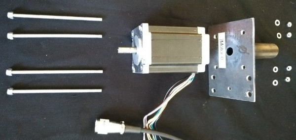
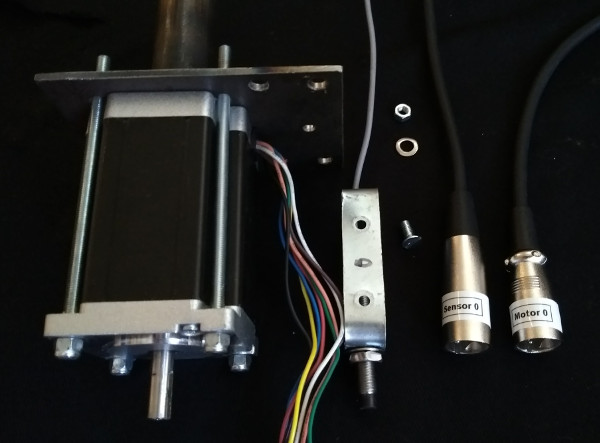
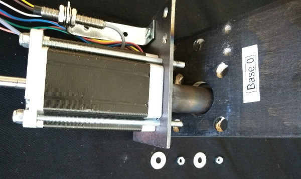
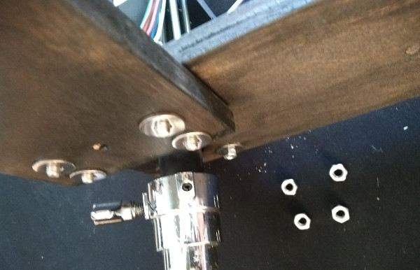
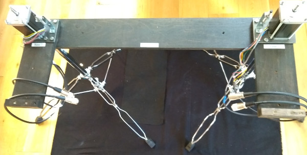
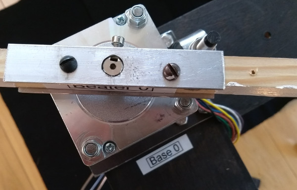
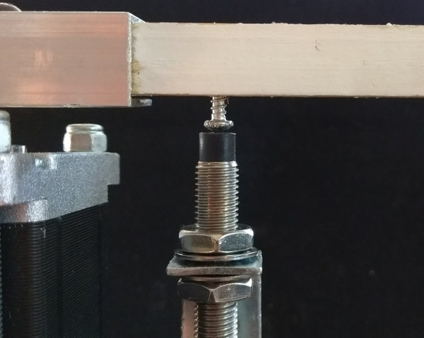
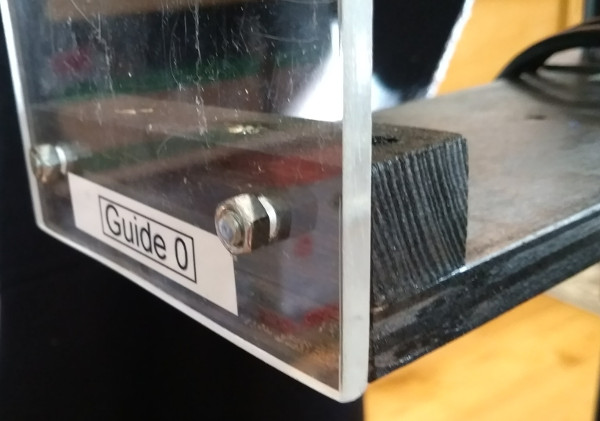

Clone or download button and then Download ZIP.~/Documents folder and rename the folder to loeffler-h.SuperCollider IDE and open the file ~/Documents/loeffler-h/supercollider/run.scd.Attach Motors to steel brackets, matching motor numbers and orienting the motor cables to the wide side of the bracket. Use four long M4 bolts, with washers and nuts. Tighten diagonally opposite bolts in order. Ensure the lock-nuts on the top of the motors are flush with the bolt. Tighten well as this will not be accessible later. 
Attach Sensors to steel brackets, matching the numbers. Use one 12mm M4 screw, with a washer and nut. Tighten well as this will not be accessible later. 
Attach Motor assemblies to Base boards on outer bolts with two 17mm washers and M4 nuts. Do not tighten yet. 
Insert into percussion stands and adjust all four motors to the same height.
Join Motor 0 to Motor 1 with Brace A (underneath) using four M6 bolts. Include a washer on the brace side. 
Join Motor 2 to Motor 3 with Brace B.
Tighten all 6 nuts on the underside of each motor assembly. 
Attach Beaters to each motor and firmly tighten with the hex key. The top of the motor shaft should be flush with the top of the beater. 
Check the beater can rotate freely without hitting the Sensor. The screw on the beater should pass directly over the sensor with a clearance of 1 mm. The sensor can be adjusted to align if necessary by bending the metal bracket or changing the height with the nuts. The depth of the beater screws can also be adjusted with a screwdriver. 
Attach perspex Guides with 25mm M5 screws. Do not overtighten. 
Driver box to the Motor and Sensor cables. There are four 5-pin XLR extension cables included if necessary for the motor cables; the sensor cables can be extended with standard 3-pin XLR microphone cables. Keep cable runs as short as possible.Main Power off, plug in the Electronics Power. The LEDs on the bottom of each sensor should be on unless the beater is over it. Check the beaters rotate freely and the sensor lights switch on and off accordingly. Adjust sensors if necessary. Leave the beaters turned so that one end is above the guide.Electronics Power and plug in the Main Power. Green LEDs should show on Power A, Power B and the four Drivers. Check that the four beaters are now held by the motors.Main Power on, replug the Electronics Power. The four beaters should rotate to the sensor position and stop.Main Power first, then the Electronics Power, then lastly plug in the USB computer connection.See score.csv for examples.
command [halfturns:H] [dir:l|r] pitch:P[-P][-P] [duration:D][-D] [recentre:c|n]t — turn, e.g. t 1 l 69 = one halfturn left at pitch 69.d — duration turn, e.g. d r 60 3 n = right turning for 3 beats at pitch 60, stop without finding sensor.u — turn until next command, e.g. u l 64 = left turning at pitch 64 until next command sent.s — stop.g — duration gliss, e.g. g r 57-69 1.5 c = right turning gliss from pitch 57-69 over 1.5 beats, find sensor afterwards.q — double gliss, e.g. q l 48-60-54 1-0.33 n = left turning double gliss from pitch 48-60 over 1 beat, then from pitch 60-54 over 1/3 beat, stop without finding sensor.T — timed turn, e.g. T 2 r 72 3 = two halfturns right over 3 beats. N.B. the pitch number is necessary but ignored.G — gliss, e.g. G 3 l 66-60 = gliss from pitch 66-60 in 3 halfturns left. Duration is indeterminate.S — set sustain duration, e.g. S 0.25 = set sustain duration to a quarter of a beat.h = single halfturn at fastest speed, this is equivalent to t 1 r 72c = recentren = do not recentreCheck beaters rotate freely